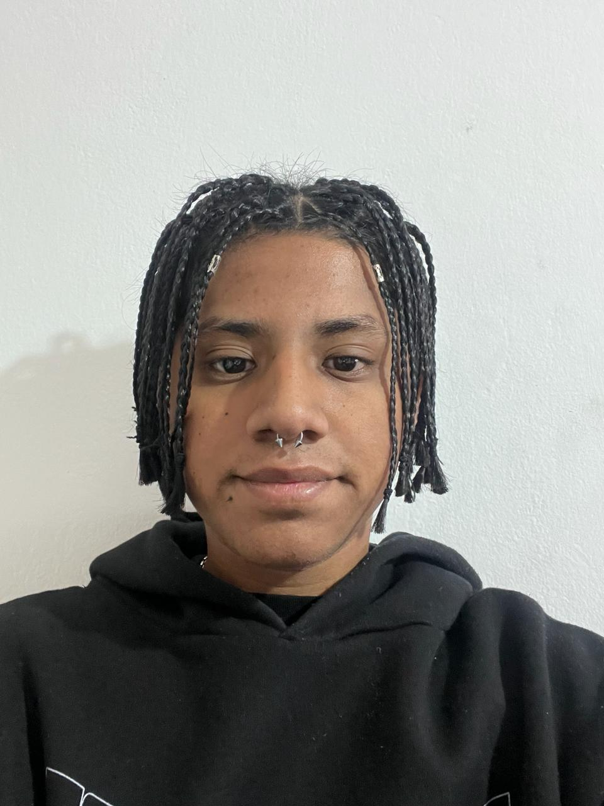

Autobiografía Leonel Salva
Estudiante de Ingeniería Informática
- 20 años
- Viviendo en Buenos Aires
- GITHUB
Soy Leonel Salva, nací en Buenos Aires el 5 de febrero de 2004. Terminé mis estudios secundarios en el colegio Domingo Savio. Actualmente, me encuentro cursando el tercer año de la carrera
Ingeniería en Informática en la Universidad Argentina de la Empresa (UADE). Además de mi formación secundaria y universitaria, también cursé Inglés en la Asociación Argentina de Cultura Inglesa
(AACI) y Francés en el Centro Universitario de Idiomas (CUI).